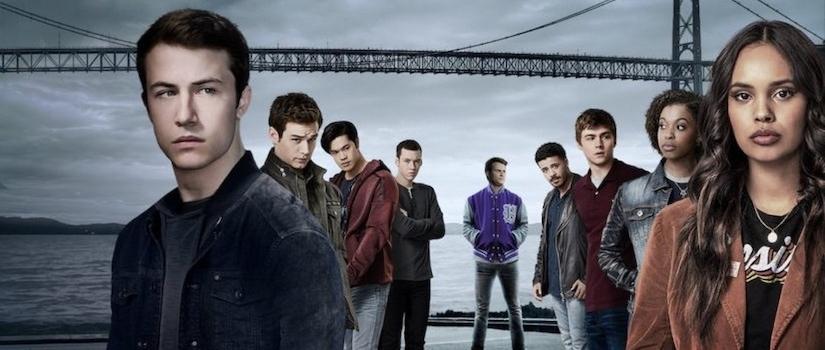

Início
13 Reasons Why (estilizado em tela como TH1RTEEN R3ASONS WHY) é uma série de televisão americana baseada no livro Thirteen Reasons Why (2007), de Jay Asher, e adaptado por Brian Yorkey para a Netflix. A série gira em torno do estudante Clay Jensen e as consequências do suicídio de uma estudante, Hannah Baker, após uma série de falhas culminantes, provocadas por indivíduos selecionados dentro de sua escola. Uma caixa de fitas cassetes gravadas por Hannah antes de se suicidar relata treze motivos pelas quais ela tirou sua própria vida.
Diana Son e Brian Yorkey são os showrunners da série. A primeira temporada tem treze episódios. A série é produzida pela July Moon Productions, Kicked to the Curb Productions, Anonymous Content e Paramount Television. Dylan Minnette estrela como Clay Jensen, enquanto Katherine Langford interpreta Hannah Baker. Alisha Boe, Brandon Flynn, Miles Heizer, Christian Navarro, Ross Butler, Devin Druid, Justin Prentice, Amy Hargreaves, Derek Luke, Kate Walsh, Brian d'Arcy James, Timothy Granaderos, Grace Saif, Brenda Strong, Mark Pellegrino, Tyler Barnhardt, Deaken Bluman, Jan Luis Castellanos e Gary Sinise também estrelam. Originalmente planejada como um filme que seria lançado pela Universal Pictures, com Selena Gomez no papel de Hannah, a adaptação foi transformada em uma série de televisão pela Netflix no final de 2015. Selena Gomez serviu como produtora executiva. A primeira temporada, e o especial 13 Reasons Why: Beyond the Reasons, foram lançados na Netflix em 31 de março de 2017.
Por meio de suas várias histórias, o programa explora e retrata uma ampla gama de questões sociais que afetam a juventude moderna, incluindo suicídio, agressão sexual, bullying, racismo, cultura esportiva, saúde mental, dependência de drogas, alcoolismo, violência doméstica, homofobia, deportação, violência policial, uso de esteroides, falta de moradia, HIV, aborto e tiroteios em escolas.
A primeira temporada foi lançada na Netflix em 31 de março de 2017. Recebeu críticas positivas da crítica e do público, que elogiaram seus temas, assuntos e atuação, principalmente as performances de Minnette e Langford. Por sua atuação, Langford recebeu uma indicação ao Globo de Ouro de Melhor Atriz em Série Dramática. No entanto, sua representação gráfica de questões como suicídio, agressão sexual, bullying e estupro (junto com outro conteúdo adulto) gerou preocupações de profissionais de saúde mental. Em resposta, a Netflix adicionou um cartão de aviso e, a partir de março de 2018, um vídeo é reproduzido no início de cada temporada alertando os espectadores sobre os temas da temporada. Em julho de 2019, a Netflix editou a cena do suicídio no episódio final da primeira temporada.
Em maio de 2017, a Netflix renovou 13 Reasons Why para uma segunda temporada devido ao sucesso dos 13 episódios iniciais; a segunda temporada foi lançada em 18 de maio de 2018 e recebeu críticas mistas do público e críticas negativas a mistas. Coincidindo com o lançamento da segunda temporada, a Netflix lançou um vídeo com o elenco que alertou os espectadores sobre alguns dos tópicos abordados na série e forneceu um site de apoio com números de crise para pessoas afetadas por depressão, ansiedade e outros problemas de saúde mental. Uma terceira temporada foi encomendada em junho de 2018 e lançada em 23 de agosto de 2019. Em agosto de 2019, a série foi renovada para uma quarta e última temporada, que estreou em 5 de junho de 2020.
O segundo especial 13 Reasons Why: Beyond the Reasons foi lançado em 18 de maio de 2018. O terceiro e último especial foi lançado em 23 de agosto de 2019, sendo lançado juntamente com a terceira temporada.
Enredo
Clay Jensen, um estudante, volta para casa da escola um dia, e encontra uma caixa misteriosa deixada na sua varanda. Dentro da caixa, ele encontra sete fitas cassete de dois lados gravadas por Hannah Baker, sua colega de escola e amor não-correspondido, que tragicamente cometeu suicídio duas semanas antes. Na fita, Hannah desenvolve um diário de áudio emocional, detalhando os treze motivos pelos quais ela decidiu se suicidar. Cada fita inclui um motivo para as seguintes pessoas: Justin Foley, Jessica Davis, Alex Standall, Tyler Down, Courtney Crimsen, Marcus Cole, Zach Dempsey, Ryan Shaver, Sheri Holland, o próprio Clay, Bryce Walker e o orientador escolar Kevin Porter. Suas instruções são claras: cada pessoa que recebe a caixa é um dos motivos pelos quais ela se matou. E, depois que cada pessoa termina de escutar as fitas, ela deve passar a caixa para a próxima pessoa. Se alguém decidir quebrar a corrente, um outro conjunto das fitas será vazado para o público. Cada fita se dirige a uma pessoa específica em sua escola e detalha o envolvimento da mesma em seu suicídio.
Na terceira temporada, oito meses após os eventos da temporada anterior, Clay e seus amigos lutam para manter a cobertura de Tyler de sua tentativa de tiro na escola e ajudá-lo em sua recuperação. A tensão aumenta com os sujeitos da fita depois que Bryce é morto com Clay como suspeito. Na quarta e última temporada, Clay começa a desenvolver problemas de saúde mental após as mortes de Bryce e Monty, enquanto os alunos planejam suas entrevistas na faculdade.
1º Temporada
Baseado no livro best-seller de Jay Asher, 13 Reasons Why segue o adolescente Clay Jensen quando ele volta para casa da escola para encontrar uma caixa misteriosa com seu nome em sua varanda. Lá dentro, ele descobre fitas cassete gravadas por Hannah Baker – sua colega de classe e paixão – que tragicamente cometeu suicídio duas semanas antes. A temporada foi lançada na Netflix em 31 de março de 2017, recebendo críticas positivas da crítica e do público. 13 Reasons Why tece uma história intrincada e comovente da vida adolescente que afetará profundamente os espectadores.
2º Temporada
13 Reasons Why foi renovada pela Netflix em 7 de maio de 2017 e lançada em 18 de maio de 2018, juntamente com um segundo especial 13 Reasons Why: Beyond the Reasons. A temporada começa cinco meses depois que Hannah Baker cometeu suicídio e onde a primeira temporada terminou. Hannah Baker ainda tem um papel importante nesta temporada através da cabeça de Clay, onde mergulha mais fundo no passado de Hannah. No entanto, Hannah não narra mais a série. As testemunhas no julgamento de Andrew e Olivia Baker contra a Liberty High School guiam a narrativa de cada episódio.
3º Temporada
Em 6 de junho de 2018, a série foi renovada para uma terceira temporada, programada para ser lançada em 2019. No dia 01 de agosto a Netflix divulgou um trailer misterioso envolvendo os personagens, juntamente com um anúncio de que os episódios seriam disponibilizados na plataforma no dia 23 de agosto, informando ainda que haverá um quarto ano para a série, com previsão de lançamento para 2020.
4º Temporada
Em 1 de agosto de 2019, foi anunciado que a série havia sido renovada para uma quarta e última temporada. Em 5 de junho de 2020, a série lançou sua quarta temporada, encerrando assim, a franquia da série.
Impacto Social
A série gerou controvérsia em relação à sua representação de suicídio e auto-mutilação, fazendo com que a Netflix adicionasse grandes avisos antes do primeiro episódio. Alguns psicólogos escolares e educadores alarmaram sobre a série. O superintendente das escolas de Palm Beach County, na Flórida, Estados Unidos, teria dito para alguns pais que suas escolas haviam tido um aumento nos comportamentos suicidas e de auto-mutilações dos estudantes, e que alguns destes estudantes "associaram seus comportamentos de risco à série da Netflix, 13 Reasons Why".
O serviço australiano de saúde mental para jovens de 12 à 25 anos, o Headspace, emitiu um aviso no final de abril de 2017 em relação ao conteúdo gráfico apresentado na série devido ao aumento do número de ligações para o serviço após o lançamento da série no país.
Em resposta à natureza gráfica da série e à alta taxa de suicídio de adolescentes na Nova Zelândia, que foi a maior entre os 34 países da OECD durante 2009 à 2012, o Office of Film & Literature Classification do país criou uma nova classificação, "RP18", permitindo que pessoas com idade igual ou superior a 18 anos assistam à série sozinhas, e as com idade inferior a 18 anos assistam com a supervisão de um pai ou responsável.
Publicado em 2019, um estudo feito pelo Instituto Nacional de Saúde Mental concluiu que a série esteve associada ao crescimento de 28% da taxa de suicídio entre crianças e adolescentes nos Estados Unidos em abril de 2017, um mês após a estreia. Segundo a pesquisa, a análise feita demonstrou que aumento de suicídio entre jovens de 10 a 17 anos aconteceram nos meses de abril, junho e dezembro de 2017, contrapondo os índices anteriores.
Elenco Prinncipal
| Ator/Atriz | Personagem |
|---|---|
| Dylan Minnette | Clay Jensen |
| Katherine Langford | Hannah Baker |
| Christian Navarro | Tony Padilla |
| Alisha Boe | Jessica Davis |
| Bradon Flynn | Justin Foley |
| Miles Heizer | Alex Standall |
| Ross Butler | Zach Dempsey |
| Devin Druid | Tyler Down |
| Timothy Granaderos | Monty de la Cruz |
| Grace Saif | Ani Achola |